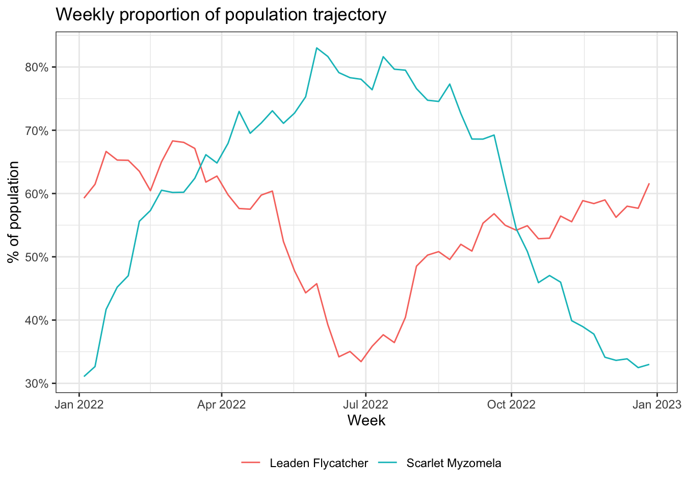
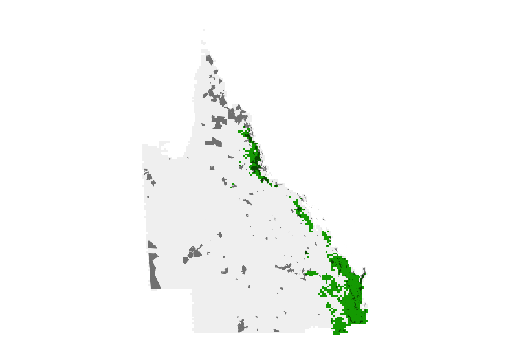

library(dplyr)
library(ebirdst)
library(exactextractr)
library(forcats)
library(ggplot2)
library(readr)
library(sf)
library(stringr)
library(terra)
library(tidyr)1 eBird Status Data Products
The eBird Status and Trends project uses full-annual cycle machine-learning models combining eBird data with remote-sensing data and accounting for variation in observer behavior and effort to produce high resolution, weekly estimates of range boundaries, occurrence rate, and relative abundance of bird species. As of November 2023, results for 2,424 species globally are available. Interactive visualizations for these species are available through the eBird Status and Trends website and the eBird Status Data Products are available through the R package ebirdst.
This workshop will introduce attendees to the eBird Status Data Products and the ebirdst R package developed specifically for working with these data. We will introduce attendees to the range of available data and how to download these data products. We’ll work through a series of applications that demonstrate real-world uses of the data products and teach users about the structure of the data and the package along the way. Let’s start by loading the packages we’ll use throughout this workshop.
1.1 Data access
Access to the eBird Status Data Products is granted through an Access Request Form at: https://ebird.org/st/request. The terms of use have been designed to be quite permissive in many cases, particularly academic and research use. After reading the eBird Status and Trends Products Terms of Use and filling out the Access Request Form you will be provided with an alphanumeric access key. To store the access key so it can be accessed by R and the ebirdst package, run the following (replacing "XXXXXXXXX" with your actual key):
#set_ebirdst_access_key("XXXXXXXXX")Then immediately restart R. This will save the access key as the environment variable EBIRDST_KEY in your .Renviron file so it’s accessible within your R session.
Checkpoint
To ensure your data access key is working, attempt run the following code, which will download a single small file. Speak to the instructor if this doesn’t work.
ebirdst_download_status("scamyz1", pattern = "abundance_median_27km",
force = TRUE)1.2 Status species
The ebirdst_runs object is a data frame listing all the available species:
glimpse(ebirdst_runs)
#> Rows: 1,113
#> Columns: 28
#> $ species_code <chr> "abetow", "acafly", "acowoo", "affeag1"…
#> $ scientific_name <chr> "Melozone aberti", "Empidonax virescens…
#> $ common_name <chr> "Abert's Towhee", "Acadian Flycatcher",…
#> $ is_resident <lgl> TRUE, FALSE, TRUE, TRUE, FALSE, TRUE, F…
#> $ breeding_quality <chr> NA, "3", NA, NA, "3", NA, "1", "3", NA,…
#> $ breeding_start <date> NA, 2022-05-24, NA, NA, 2022-06-21, NA…
#> $ breeding_end <date> NA, 2022-08-02, NA, NA, 2022-07-12, NA…
#> $ nonbreeding_quality <chr> NA, "3", NA, NA, "1", NA, "1", "3", NA,…
#> $ nonbreeding_start <date> NA, 2022-12-06, NA, NA, 2022-11-15, NA…
#> $ nonbreeding_end <date> NA, 2022-02-15, NA, NA, 2022-03-29, NA…
#> $ postbreeding_migration_quality <chr> NA, "3", NA, NA, "3", NA, "1", "3", NA,…
#> $ postbreeding_migration_start <date> NA, 2022-08-09, NA, NA, 2022-07-19, NA…
#> $ postbreeding_migration_end <date> NA, 2022-11-29, NA, NA, 2022-11-08, NA…
#> $ prebreeding_migration_quality <chr> NA, "3", NA, NA, "3", NA, "2", "3", NA,…
#> $ prebreeding_migration_start <date> NA, 2022-02-22, NA, NA, 2022-04-05, NA…
#> $ prebreeding_migration_end <date> NA, 2022-05-17, NA, NA, 2022-06-14, NA…
#> $ resident_quality <chr> "3", NA, "3", "2", NA, "2", NA, NA, "3"…
#> $ resident_start <date> 2022-01-04, NA, 2022-01-04, 2022-01-04…
#> $ resident_end <date> 2022-12-27, NA, 2022-12-27, 2022-12-27…
#> $ has_trends <lgl> TRUE, TRUE, TRUE, FALSE, TRUE, TRUE, FA…
#> $ trends_season <chr> "resident", "breeding", "resident", NA,…
#> $ trends_region <chr> "north_america", "north_america", "nort…
#> $ trends_start_year <dbl> 2012, 2012, 2011, NA, 2012, 2015, NA, 2…
#> $ trends_end_year <dbl> 2022, 2022, 2021, NA, 2022, 2022, NA, 2…
#> $ trends_start_date <chr> "01-25", "05-24", "11-01", NA, "06-21",…
#> $ trends_end_date <chr> "05-10", "08-02", "05-03", NA, "07-12",…
#> $ rsquared <dbl> 0.923, 0.857, 0.881, NA, 0.787, 0.820, …
#> $ beta0 <dbl> -0.01392, 0.68942, -0.09267, NA, -0.162…If you’re working in RStudio, you can use View() to interactively explore this data frame. You can also consult the Status and Trends species page the full list of available species. On this page you can also filter by region, for example to see only those species with some portion of their range falling within Australia.
1.3 Downloading data
The function ebirdst_download_status() downloads data for a single species given a species name (common name, scientific name, or species code). The full data package for each species contains a large number of files, many of which may be unnecessary for your application. You can use the dry_run = TRUE and download_all = TRUE arguments to ebirdst_download_status() to list the available files without downloading them.
ebirdst_download_status("Scarlet Myzomela", download_all = TRUE, dry_run = TRUE)Within the data package directory, the primary files are organized according to the following structure:
weekly/: a directory containing weekly estimates of relative abundance and proportion of population on a regular grid in GeoTIFF format at three resolutions. See below for more details.seasonal/: a directory containing seasonal estimates of relative abundance and proportion of population on a regular grid in GeoTIFF format at three resolutions. These are derived from the corresponding weekly raster data. Dates defining the boundary of each season are set on a species-specific basis by an expert reviewer familiar with the species. These dates are available in theebirdst_runsdata frame. Only seasons that passed the expert review process are included. See below for more details.config.json: run-specific parameters, mostly for internal use, but also containing useful parameters for mapping the abundance data.
All predictions are made on a standard 2.96km x 2.96km global grid, however, for convenience lower resolution GeoTIFFs are also provided, which are typically much faster to work with. The three resolutions are:
- High resolution (
3km): the native 2.96 km resolution data - Medium resolution (
9km): the high resolution data aggregated by a factor of 3 in each direction resulting in a resolution of 8.89 km - Low resolution (
27km): the high resolution data aggregated by a factor of 9 in each direction resulting in a resolution of 26.7 km
The ebirdst_download_status() function has been designed with a number of parameters that make it easy to choose what specific data products to download. For the sake of speed in the workshop, we’re going to use the function default to only download relative abundance and proportion of population. To learn more about downloading additional specific data products, load the help for the function with ?ebirdst::ebirdst_download_status.
To download the data for Scarlet Myzomela use:
ebirdst_download_status(species = "Scarlet Myzomela")The function will automatically identify a suitable location to store the downloaded data.
Tip
To avoid any issues resulting from all participants downloading data over a slow internet connection at the same time, for the remainder of this lesson we’ll use data included in the data package for this workshop. To confirm the data are in the correct location, let’s load a raster file with the path defined. Note: to keep the file sizes small and the analysis fast, the data package has not included the highest resolution 3km data. If you would like to work with that resolution, you’ll need to run the download function for these species on your own.
test_raster <- load_raster("Scarlet Myzomela", product = "abundance",
period = "seasonal", path = "data/ebirdst-data",
resolution = "9km")
test_raster
#> class : SpatRaster
#> dimensions : 1877, 4504, 4 (nrow, ncol, nlyr)
#> resolution : 8888, 8888 (x, y)
#> extent : -2e+07, 2e+07, -6676023, 1e+07 (xmin, xmax, ymin, ymax)
#> coord. ref. : +proj=sinu +lon_0=0 +x_0=0 +y_0=0 +R=6371007.181 +units=m +no_defs
#> source : scamyz1_abundance_seasonal_mean_9km_2022.tif
#> names : breeding, nonbreeding, prebree~gration, postbre~gration
#> min values : 0.00, 0.00, 0.0, 0.00
#> max values : 1.66, 4.25, 2.9, 4.53However, when working with eBird Status data products after this workshop, it’s best to use the standard download location and skip adding path = "data/ebirdst-data/" to function calls.
1.4 Applications
The core of the workshop will work through three example applications using the eBird Status data products as a way to understand practical applications and learn about the data structure and R package:
- Trajectories: chart the change in the proportion of the population in a region throughout the year for a set of species.
- Regional statistics: calculate the proportion of the breeding population falling within protected areas for a set of species.
- Prioritization: use eBird Status data products to identify important sites for protection of a set of species.
1.4.1 Trajectories
In this application, we’ll look at the change in for populations for two species throughout the year in Queensland, Australia. We’ll consider Scarlet Myzomela and Leaden Flycatcher, two migrant species that are mostly endemic to Australia (data for both species are in the workshop data package). When comparing multiple species, or a single species between different seasons, as is the case here, it’s important to consider the proportion of population rather than relative abundance to mitigate the impact of differences in detectability between seasons and species.
Let’s start by using the load_raster() function to load the weekly proportion of population data for these species. We’ll also load a boundary polygon for Queensland. eBird Status Data Products that are in grid or raster format come in three spatial resolutions: 3 km (the original fine scale of prediction), 9 km (aggregated once), and 27 km (a second aggregation). Which resolution to use depends on use case and performance. The 27 km data will be fastest to work with, but provide the least resolution. Here we’ll work with the 9 km resolution as a trade off of resolution for speed in the workshop.
# proportion of population cubes
pop1 <- load_raster("Scarlet Myzomela", product = "proportion-population",
period = "weekly", resolution = "9km", path = "data/ebirdst-data/")
pop2 <- load_raster("Leaden Flycatcher", product = "proportion-population",
period = "weekly", resolution = "9km", path = "data/ebirdst-data/")
# Queensland boundary, projected to match the raster data
qld <- read_sf("data/gis-data.gpkg", "regions") %>%
filter(state_code == "AU-QLD") %>%
st_transform(crs = crs(pop1))Now, we’ll use the R package exactextractr to calculate the sum of the proportions for each species within Queensland.
# sum within Queensland
# Scarlet Myzomela
traj1 <- exact_extract(pop1, qld, fun = "sum")
traj1 <- data.frame(species = "Scarlet Myzomela",
week = as.Date(names(pop1)),
prop_pop = as.numeric(traj1[1, ]))
# Leaden Flycatcher
traj2 <- exact_extract(pop2, qld, fun = "sum")
traj2 <- data.frame(species = "Leaden Flycatcher",
week = as.Date(names(pop2)),
prop_pop = as.numeric(traj2[1, ]))
# combine
trajectories <- bind_rows(traj1, traj2)
head(trajectories)
#> species week prop_pop
#> 1 Scarlet Myzomela 2022-01-04 0.311
#> 2 Scarlet Myzomela 2022-01-11 0.326
#> 3 Scarlet Myzomela 2022-01-18 0.417
#> 4 Scarlet Myzomela 2022-01-25 0.452
#> 5 Scarlet Myzomela 2022-02-01 0.470
#> 6 Scarlet Myzomela 2022-02-08 0.556Finally we can plot the trajectories.
ggplot(trajectories, aes(x = week, y = prop_pop, color = species)) +
geom_line() +
scale_y_continuous(labels = scales::percent) +
labs(x = "Week",
y = "% of population",
title = "Weekly proportion of population trajectory",
color = NULL) +
theme_bw() +
theme(legend.position = "bottom")
1.4.2 Regional statistics
For this application, we calculate the proportion of the population within protected areas in Queensland for a set of species. As an example species group, we’ll use a set of 12 species that are mostly endemic to eastern Australia. For migratory species we’ll focus on the breeding season.
species_list <- c("yefhon1", "easspi1", "scamyz1", "blfmon1", "railor5",
"yelrob1", "bruwat1", "belmin1", "ytbcoc1", "scblor1",
"broger1", "cresht1")
# add common names, migrant/resident status, and quality
species_list <- filter(ebirdst_runs, species_code %in% species_list) %>%
mutate(quality = ifelse(is_resident, resident_quality, breeding_quality)) %>%
select(species_code, common_name, is_resident, quality)
print(species_list)
#> # A tibble: 12 × 4
#> species_code common_name is_resident quality
#> <chr> <chr> <lgl> <chr>
#> 1 belmin1 Bell Miner TRUE 2
#> 2 blfmon1 Black-faced Monarch FALSE 3
#> 3 broger1 Brown Gerygone TRUE 3
#> 4 bruwat1 Little Wattlebird TRUE 3
#> 5 cresht1 Eastern Shrike-tit TRUE 1
#> 6 easspi1 Eastern Spinebill FALSE 3
#> # ℹ 6 more rowsWe have five migrants and nine resident species. Notice that 1 of these species had a quality rating of 1 indicating that caution should be exercised when using the results. For real world use you should examine the relative abundance maps for errors prior to using them for analysis; however, for this example, we’ll use this species list as is. We’ll load and combine the breeding (for migrants) and resident (for residents) proportion of population layers for this list of species. Data for all of these species has been included in the workshop data package.
Tip
Relative abundance estimates are impacted by detection rates, which can vary between species. As a results, when comparing eBird Status and Trends data across species, it’s critical to always use the proportion of population layers, which have been standardized by dividing each cell value by the total relative abundance across all cells.
# loop over the species list extracting the seasonal proportion of population
prop_population <- list()
for (i in seq_len(nrow(species_list))) {
# load the seasonal cube for this species
this_sp <- species_list[i, ]
pop <- load_raster(this_sp$species_code, product = "proportion-population",
period = "seasonal", resolution = "9km",
path = "data/ebirdst-data/")
# subset to the layer we need: breeding or resident
pop <- pop[[ifelse(this_sp$is_resident, "resident", "breeding")]]
prop_population[[this_sp$species_code]] <- pop
}
# stack the rasters into a single object
prop_population <- rast(prop_population)The GIS data available in the workshop data package contains polygon boundaries for the National Reserve System, subset to Queensland, from the Collaborative Australian Protected Areas Database (CAPAD). Let’s load them now and project to match the raster layers. For this example, we’ll combine all the protected area polygons together into one feature; however, this analysis could be modified to consider how the distribution of species varies between protected areas.
protected <- read_sf("data/capad2022.gpkg") %>%
filter(STATE == "QLD") %>%
st_combine() %>%
st_transform(crs = crs(prop_population))Finally, we can use exactextracr to calculate the total percent of population within protected areas for each species.
percent_protected <- exact_extract(prop_population, protected, fun = "sum")
percent_protected <- as.numeric(percent_protected[1, ])
percent_protected <- data.frame(species_code = species_list$species_code,
common_name = species_list$common_name,
percent_population = percent_protected) %>%
arrange(desc(percent_population))
print(percent_protected)
#> species_code common_name percent_population
#> 1 railor5 Rainbow Lorikeet 0.14046
#> 2 scblor1 Scaly-breasted Lorikeet 0.10064
#> 3 broger1 Brown Gerygone 0.08406
#> 4 blfmon1 Black-faced Monarch 0.08291
#> 5 scamyz1 Scarlet Myzomela 0.07773
#> 6 belmin1 Bell Miner 0.05049
#> 7 yelrob1 Eastern Yellow Robin 0.03767
#> 8 bruwat1 Little Wattlebird 0.01492
#> 9 easspi1 Eastern Spinebill 0.01296
#> 10 yefhon1 Yellow-faced Honeyeater 0.01189
#> 11 cresht1 Eastern Shrike-tit 0.00967
#> 12 ytbcoc1 Yellow-tailed Black-Cockatoo 0.00867
# plot the data
ggplot(percent_protected) +
aes(x = fct_reorder(common_name, percent_population),
y = percent_population) +
geom_col(aes(fill = percent_population)) +
scale_y_continuous(labels = scales::percent) +
scale_fill_viridis_b() +
labs(x = NULL, y = "Percent of population in protected areas") +
coord_flip() +
theme_bw() +
theme(legend.position = "none")1.4.3 Prioritization
For the final application, we’ll perform a multi-species site prioritization exercise, identifying important sites for protecting the set of species we identified in the previous application. Let’s start by generating a multi-species importance layer by calculating the mean percent of population across all selected species. Since we’re focused on identifying sites in Queensland, we’ll also crop and mask the importance layer.
# importance: mean proportion of population across species
# fill missing values with zeros prior to averaging
importance <- ifel(is.na(prop_population), 0, prop_population) %>%
mean(na.rm = TRUE) %>%
# using the spatial data from above to crop and mask
crop(qld) %>%
mask(qld)
# plot the square root of importance since the data are right skewed
par(mar = c(0.25, 0.25, 0.25, 0.25))
crs <- "+proj=laea +lon_0=146.95 +lat_0=-19.15 +datum=WGS84 +units=m +no_defs"
r_plot <- sqrt(importance) %>%
project(crs, method = "near") %>%
trim()
plot(r_plot, axes = FALSE)
The absolute numbers in this map are challenging to interpret (they’re the mean proportion of the population across the species in each cell). Instead, the values should be interpreted in relative terms, giving the relative importance of each cell for this set of species.
This is application so far, we have examined existing protected areas. For the sake of comparison, let’s imagine we want to identify the most important sites in eastern Australia that cover the same area as the existing protected area network. What proportion of Australia does the current protected area network cover?
# proportion of queensland in existing protected area network
area_aus_qld <- sum(st_area(qld))
protected_qld <- read_sf("data/capad2022.gpkg") %>%
filter(STATE %in% c("QLD") &
IUCN %in% c("Ia", "Ib", "II", "III", "IV")) %>%
st_combine() %>%
st_transform(crs = crs(prop_population))
area_aus_qld_protected <- protected_qld %>%
st_area()
proportion_protected <- as.numeric(area_aus_qld_protected / area_aus_qld)
print(proportion_protected)
#> [1] 0.072So, 7.2% of eastern Australia is covered by the existing network of protected areas. Let’s identify the top 7.2% most important raster cells from the multi-species importance layer.
# identify the quantile corresponding to the desired protection level
q <- global(importance, fun = quantile,
probs = 1 - proportion_protected, na.rm = TRUE) %>%
as.numeric()
# identify the most importance cells
selected_sites <- as.numeric(importance >= q)Let’s compare maps of the existing protected area network and the sites selected using eBird Status and Trends.
par(mar = c(0.25, 0.25, 0.25, 0.25))
# high importance
r_plot <- project(selected_sites, crs, method = "near") %>%
trim()
protected_proj <- st_transform(protected_qld, crs = crs) %>%
st_geometry()
plot(r_plot, axes = FALSE, legend = FALSE)
# existing
plot(st_simplify(protected_proj),
col = "#00000088", border = NA,
add = TRUE)
The high importance sites we identified are shown in green, while the existing protected area network is overlaid in grey. It appears the existing protected area network is doing a better job in northern Queensland than in southeast Queensland for these species. This might not be surprising since the location of existing protected areas was not chosen specifically to protect these species. Let’s quantify what proportion of the population these two regions capture.
# mask the proportion of population layers by the selected sites
selected_pp <- prop_population %>%
crop(selected_sites) %>%
mask(selected_sites, maskvalues = c(0, NA))
# calculate total percent of population within proposed sites
percent_selected <- global(selected_pp, fun = "sum", na.rm = TRUE)
percent_selected <- data.frame(species_code = names(selected_pp),
selected_percent = percent_selected[, 1])
# combine with values for existing network
comparison <- inner_join(percent_protected, percent_selected,
by = "species_code") %>%
rename(existing_network = percent_population,
prioritized_sites = selected_percent) %>%
pivot_longer(cols = c(existing_network, prioritized_sites),
names_to = "network_type",
values_to = "percent_population")
# plot the data
ggplot(comparison) +
aes(x = fct_reorder(common_name, percent_population),
y = percent_population,
group = network_type,
fill = network_type) +
geom_col(position = "dodge") +
scale_y_continuous(labels = scales::percent) +
scale_fill_brewer(palette = "Set1") +
labs(x = NULL,
y = "Percent of population in protected areas",
fill = NULL) +
coord_flip() +
theme(legend.position = "bottom")
So, for the same total area, we could capture a much larger proportion of the populations of these species if we use eBird Status data products for these species in our site prioritization. This example is, of course, overly simplistic. For example, in a real world application, different sites have different costs associated with protection and you would want to account for that during prioritization. For more complex prioritization problems, systematic conservation planning tools like the R package prioritizr can be used effectively with eBird Status data products.